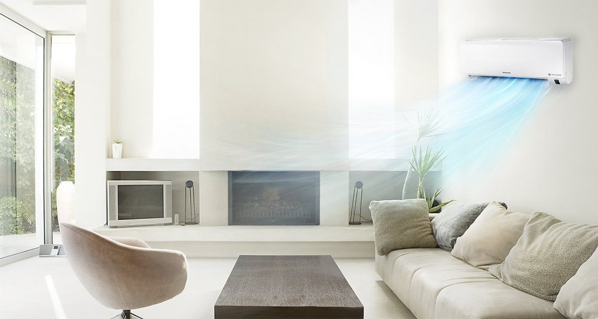
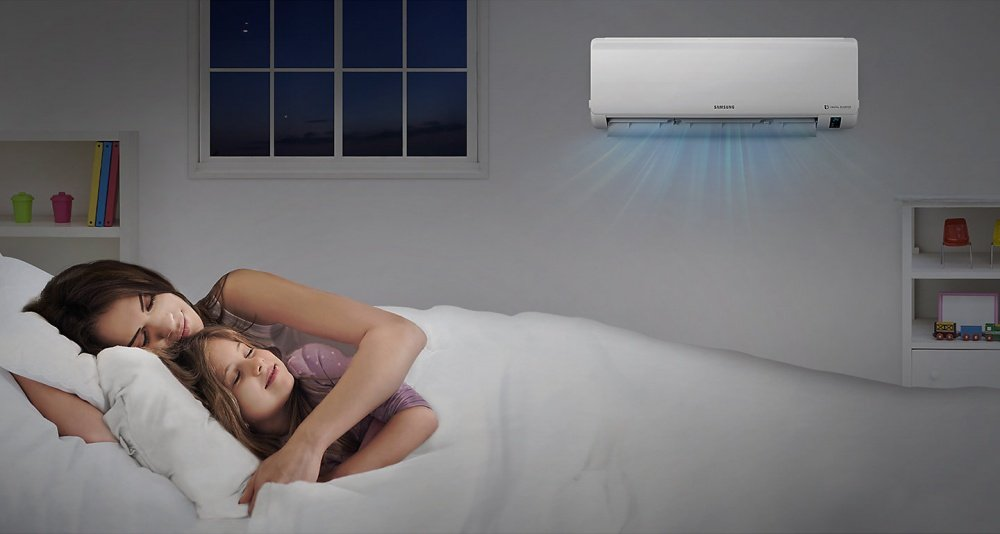
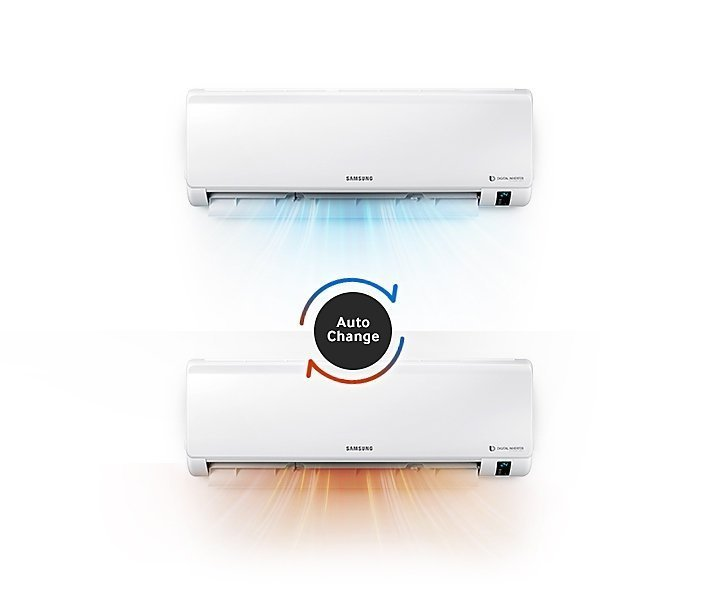
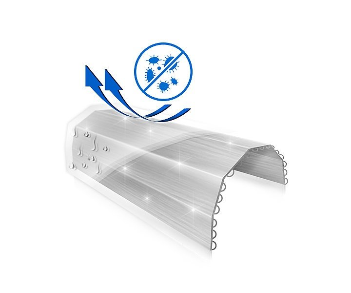

Работает с умом, экономит энергию
Энергоэффективная технология цифрового инвертора Digital Inverter 8-Pole поддерживает желаемую температуру, нет необходимости часто выключать и снова включать кондиционер. Таким образом он потребляет меньше электроэнергии* и обеспечивает комфорт в течение длительного периода.

Режим быстрого охлаждения Fast Cooling
В режиме быстрого охлаждения Fast Cooling воздух охлаждается намного быстрее за счет работы компрессора на максимальной мощности с максимальной скоростью вращения вентилятора в течение 30 минут*. Цифровой инвертор Digital Inverter 8-Pole помогает быстро достигать максимальной частоты во время пуска.

Сохраняет воздух чистым
Фильтр 3 Care Filter обеспечивает подачу свежего воздуха и сохраняет в чистоте внутреннюю часть внутреннего блока кондиционера. Помимо улавливания пыли, он устраняет до 99% определенных вирусов, бактерий и аллергенов*, когда они проходят через его плотную фильтрующую сетку.

Поддерживает комфортную прохладу
Система 2-ступенчатого охлаждения быстро начинает охлаждение воздуха в режиме Fast Cool. Затем кондиционер автоматически переходит в режим Comfort Cool для поддержания желаемой температуры, поэтому нет необходимости постоянно изменять настройки.

Стабильность рабочих характеристик
Кондиционер Samsung способен работать в самых тяжелых атмосферных условиях благодаря технологии тройной защиты Triple Protector Plus. Она защищает от сбоев в электросети без использования отдельного стабилизатора напряжения*. Также кондиционер имеет антикоррозийное покрытие и способен выдерживать экстремально высокие температуры.

Комфортный сон
Режим комфортного сна Good Sleep создает идеальный микроклимат в вашей спальне для хорошего ночного сна. Функция контроля температуры обеспечит вам комфортные условия, чтобы вы могли быстро засыпать, спать глубоким сном и просыпаться бодрым.

Автоматический контроль температуры
Функция Auto Change Over автоматически выбирает режим работы (охлаждение или нагрев), необходимый для поддержания заданной температуры. Таким образом, вы получаете постоянно комфортную температуру без необходимости менять настройки.

Автоматическая очистка
Когда кондиционер выключен, функция автоматической очистки Auto Clean автоматически запускает вентилятор для удаления пыли и влаги в теплообменнике. Таким образом, он остается чистым и сухим, что предотвращает рост бактерий и плесени.
